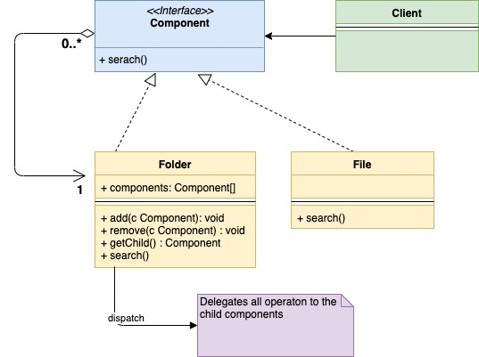

Composite Pattern
출처: https://golangbyexample.com/composite-design-pattern-golang/
개요
‘composite’라고 불리는 개체그룹이 단일개체와 유사한 방식으로 처리되기를 원할때 사용.
트리구조로 객체들을 엮는다.
UML 다이어그램
OS의 파일시스템에는 폴더와 파일 두가지 유형의 개체가 있는데, 폴더와 파일은 동일하게 취급받는 경우가 있다.


Mapping
| Component interface | component.go |
| Composite | folder.go |
| Leaf | file.go |
| client | main.go |
코드
component.go
package main
type component interface {
search(string)
}
folder.go
package main
import "fmt"
type folder struct {
components []component
name string
}
func (f *folder) search(keyword string) {
fmt.Printf("Serching recursively for keyword %s in folder %s\n", keyword, f.name)
for _, composite := range f.components {
composite.search(keyword)
}
}
func (f *folder) add(c component) {
f.components = append(f.components, c)
}
file.go
package main
import "fmt"
type file struct {
name string
}
func (f *file) search(keyword string) {
fmt.Printf("Searching for keyword %s in file %s\n", keyword, f.name)
}
func (f *file) getName() string {
return f.name
}
main.go
package main
func main() {
file1 := &file{name: "File1"}
file2 := &file{name: "File2"}
file3 := &file{name: "File3"}
folder1 := &folder{
name: "Folder1",
}
folder1.add(file1)
folder2 := &folder{
name: "Folder2",
}
folder2.add(file2)
folder2.add(file3)
folder2.add(folder1)
folder2.search("rose")
}
실행 결과
Serching recursively for keyword rose in folder Folder2
Searching for keyword rose in file File2
Searching for keyword rose in file File3
Serching recursively for keyword rose in folder Folder1
Searching for keyword rose in file File1